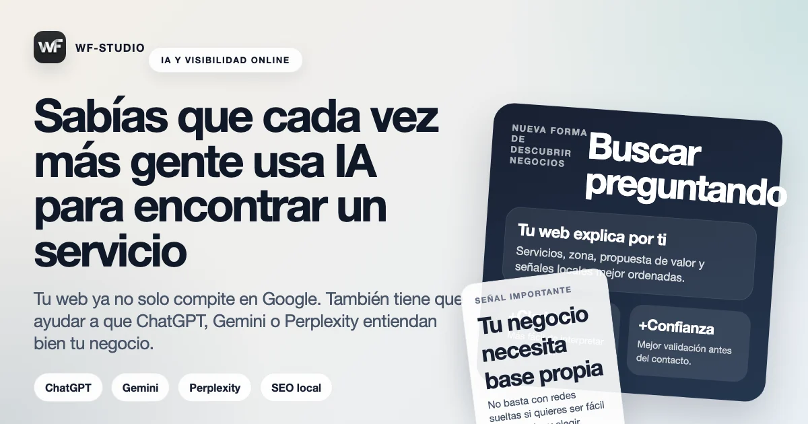

Hasta hace poco, cuando alguien necesitaba un servicio, lo normal era abrir Google, mirar un par de webs, quizá revisar el mapa y decidir. Eso sigue pasando, pero ahora se suma otro comportamiento: cada vez más personas preguntan primero a una IA.
Le dicen cosas como “recomiéndame un entrenador personal en Fuengirola”, “qué debería mirar antes de contratar una web” o “qué diferencias hay entre un fisio y un masaje deportivo”. La IA no siempre da la respuesta final, pero sí influye mucho en la fase de descubrimiento.
Qué cambia para un negocio local
La primera consecuencia es simple: si tu negocio no tiene una base web clara, es más difícil que tu información aparezca bien interpretada, resumida o citada en este nuevo tipo de búsqueda asistida. Las redes aportan señales, pero una web estructurada sigue siendo la fuente más sólida para explicar quién eres, qué haces y dónde trabajas.
Además, la IA tiende a valorar contenido claro, bien escrito, coherente y específico. Eso beneficia mucho a los negocios que tienen páginas bien enfocadas, textos entendibles y señales locales claras.
No necesitas “una web para la IA”. Necesitas una web clara para personas y suficientemente ordenada para que también las herramientas automáticas la entiendan bien.
La web gana aún más peso
Cuando alguien llega desde una recomendación de IA, normalmente quiere validar rápido si encajas o no. Ahí una web sencilla pero seria marca mucha diferencia. Si la persona aterriza en un perfil social desordenado, con publicaciones antiguas y poca información útil, la confianza baja.
En cambio, si encuentra una web limpia, con servicios claros, zona de trabajo, contacto fácil y mensajes bien escritos, es mucho más fácil que te elija o al menos te tenga en cuenta.
Qué hacer ahora mismo
- Tener una página propia con tus servicios explicados con claridad.
- Incluir tu zona, tipo de cliente y propuesta de valor real.
- Crear contenido útil que responda dudas habituales.
- No depender solo de Instagram o Facebook para explicar tu negocio.
Esto no significa que Google desaparezca ni que las redes dejen de servir. Significa que la capa intermedia de descubrimiento se está ampliando, y quien tenga una presencia digital ordenada lo va a notar antes.
Si quieres ver cómo se traduce esto a intención local concreta, puedes seguir con la guía de SEO local en Fuengirola y Málaga con apoyo de publicidad e IA o revisar cómo salir en Google Maps en Fuengirola y Málaga.
Y si prefieres ir directamente a una propuesta más aplicada, tienes aquí la página de SEO local en Fuengirola y aquí la de diseño web en Fuengirola, donde ya se traduce esta lógica a una estructura de captación más concreta.